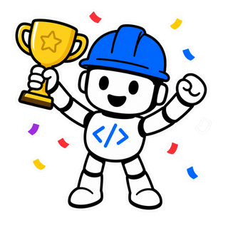
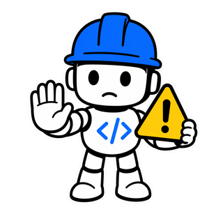
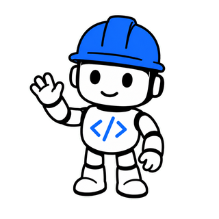

<!DOCTYPE html>
<html lang="es">
<head>
<meta charset="UTF-8">
<meta name="viewport" content="width=device-width, initial-scale=1.0">
<title>IBM Bob · Level 3 — Guía de labs</title>
<style>
:root{
  color-scheme:dark;
  /* dark, Bob-like */
  --bg:#0b0e14; --bg2:#0e131c; --panel:#141b27; --panel2:#1a2333; --line:#232d3f; --line2:#2c3648;
  --ink:#e7edf6; --muted:#94a3b8; --faint:#6b7688;
  --blue:#4d8dff; --blue2:#7fa9ff; --purple:#a879ff;
  --grad:linear-gradient(135deg,#3b7bff,#9a5cff);
  --ok:#3fb950; --warn:#e3b341;
  /* alias antiguos que usan los bloques reutilizados (setup/inputs/conceptos) */
  --navy:#1b2536; --navy2:#26344f; --ice:rgba(77,141,255,.15); --card:#141b27;
  --okbg:rgba(63,185,80,.12); --warnbg:rgba(227,179,65,.10); --code:#070a10; --codetx:#dbe6f5;
  --shadow:0 12px 34px rgba(0,0,0,.45); --shadow-h:0 18px 46px rgba(0,0,0,.55);
}
*{box-sizing:border-box}
html{scroll-behavior:smooth}
body{margin:0;font-family:-apple-system,BlinkMacSystemFont,"Segoe UI",Roboto,Helvetica,Arial,sans-serif;
     color:var(--ink);background:var(--bg);line-height:1.55;-webkit-font-smoothing:antialiased}
a{color:var(--blue2);text-decoration:none}
b{color:#f2f6fc}
img{max-width:100%}

/* views + transitions */
.view{display:none;animation:fade .3s ease}
.view.active{display:block}
@keyframes fade{from{opacity:0;transform:translateY(10px)}to{opacity:1;transform:none}}

/* ---------- HERO ---------- */
.hero{position:relative;max-width:1040px;margin:0 auto;padding:70px 22px 24px;text-align:center;overflow:hidden}
.hero::before{content:"";position:absolute;top:-160px;left:50%;transform:translateX(-50%);
  width:680px;height:360px;background:radial-gradient(closest-side,rgba(90,110,255,.22),transparent 70%);pointer-events:none}
.kicker{position:relative;color:var(--blue2);font-weight:800;letter-spacing:3px;font-size:12px;text-transform:uppercase}
.hero h1{position:relative;margin:12px 0 8px;font-size:46px;letter-spacing:-.025em;line-height:1.04;
  background:linear-gradient(180deg,#ffffff,#c7d4ea);-webkit-background-clip:text;background-clip:text;color:transparent}
.hero .lead{position:relative;margin:0 auto;max-width:560px;color:var(--muted);font-size:17px}
.heroimg{position:relative;display:block;width:148px;height:auto;margin:0 auto 6px;filter:drop-shadow(0 12px 26px rgba(0,0,0,.55))}
@media(max-width:680px){.heroimg{width:112px}}
.secbob{float:right;width:96px;height:auto;margin:-4px -6px 4px 18px;filter:drop-shadow(0 8px 18px rgba(0,0,0,.5))}
@media(max-width:680px){.secbob{width:58px;margin-left:10px}}
.ovprog{position:relative;max-width:440px;margin:26px auto 0;display:flex;align-items:center;gap:12px}
.ovbar{flex:1;height:8px;border-radius:20px;background:#1c2637;overflow:hidden;border:1px solid var(--line)}
.ovbar i{display:block;height:100%;width:0;background:var(--grad);border-radius:20px;transition:width .5s}
.ovprog span{font-size:12.5px;color:var(--muted);white-space:nowrap;font-variant-numeric:tabular-nums}

/* ---------- groups + card grid ---------- */
.group{max-width:1040px;margin:40px auto 14px;padding:0 22px;font-size:12.5px;letter-spacing:1.6px;
  text-transform:uppercase;color:var(--faint);font-weight:800}
.cards{max-width:1040px;margin:0 auto;padding:0 22px;display:grid;gap:14px;
  grid-template-columns:repeat(auto-fill,minmax(320px,1fr))}
.cards.vert{grid-template-columns:1fr;max-width:760px;padding:0}

/* uniform card */
.card{display:flex;align-items:center;gap:15px;background:var(--panel);border:1px solid var(--line);
  border-radius:16px;padding:16px 16px;box-shadow:var(--shadow);cursor:pointer;
  transition:transform .16s ease,box-shadow .16s ease,border-color .16s ease,background .16s ease}
.card:hover{border-color:#4a5c86;background:var(--panel2)}
.card,.navbtn{position:relative;overflow:hidden}
.card>*,.navbtn>*{position:relative;z-index:1}
.card::before,.navbtn::before{content:"";position:absolute;inset:0;border-radius:inherit;background:radial-gradient(260px circle at var(--mx,50%) var(--my,50%),rgba(99,140,255,.22),transparent 62%);opacity:0;transition:opacity .3s ease;pointer-events:none;z-index:0}
.card:hover::before,.navbtn:hover::before{opacity:1}
.chip{flex:none;width:60px;height:60px;border-radius:14px;display:flex;align-items:center;justify-content:center;
  font-weight:800;font-size:21px;color:#fff;letter-spacing:-.01em}
.chip.g-blue{background:var(--grad)}
.chip.g-slate{background:linear-gradient(135deg,#3a465e,#54617d)}
.chip.g-star{background:linear-gradient(135deg,#c8901f,#f0b429)}
.chip-img{flex:none;width:60px;height:60px;border-radius:14px;object-fit:cover;display:block}
.cbody{flex:1;min-width:0}
.ctitle{font-weight:700;font-size:16.5px;color:#f1f5fb;line-height:1.25}
.csub{color:var(--muted);font-size:13px;margin-top:3px;overflow:hidden;text-overflow:ellipsis}
.ckick{color:var(--blue2);font-weight:800;letter-spacing:2px;font-size:11px;text-transform:uppercase;margin-bottom:3px}
.chev{flex:none;color:#4a597a;font-size:24px;font-weight:700;padding-right:4px}
/* progress ring */
.ring{flex:none;width:46px;height:46px;border-radius:50%;display:grid;place-items:center;
  background:conic-gradient(var(--blue) calc(var(--p,0)*1%), #223049 0)}
.ring::after{content:attr(data-lbl);width:37px;height:37px;border-radius:50%;background:var(--panel);
  display:grid;place-items:center;font-size:10.5px;font-weight:800;color:var(--muted);font-variant-numeric:tabular-nums}
.card:hover .ring::after{background:var(--panel2)}
.ring.full{background:var(--ok)}
.ring.full::after{content:"✓";color:var(--ok);font-size:16px}

/* ---------- FOCUS view ---------- */
.focusbar{position:sticky;top:0;z-index:20;background:rgba(11,14,20,.82);backdrop-filter:saturate(160%) blur(12px);
  border-bottom:1px solid var(--line);display:flex;align-items:center;justify-content:space-between;padding:12px 22px}
.back{font-weight:700;font-size:14px;color:var(--blue2);display:inline-flex;align-items:center;gap:6px}
.back:hover{color:#a7c4ff}
.fb-prog{font-size:12.5px;color:var(--muted);font-weight:700;font-variant-numeric:tabular-nums}
.focusbody{max-width:760px;margin:0 auto;padding:30px 22px 8px}

/* module head */
.modhead .modkick{color:var(--blue2);font-weight:800;letter-spacing:2px;font-size:12px;text-transform:uppercase}
.modhead .modname{margin:6px 0 8px;font-size:32px;letter-spacing:-.02em;color:#f1f5fb}
.modhead .moddesc{margin:0 0 22px;color:var(--muted);font-size:16px;max-width:620px}
.smodkick{color:var(--blue2);font-weight:800;letter-spacing:2px;font-size:12px;text-transform:uppercase}
.smoddesc{margin:6px 0 18px;color:var(--muted);font-size:15px;max-width:640px}
.trouble{margin-top:18px}
.trouble table{width:100%;border-collapse:collapse;font-size:13.5px;margin-top:8px}
.trouble th,.trouble td{border:1px solid var(--line);padding:8px 11px;text-align:left;vertical-align:top}
.trouble th{background:var(--panel2);color:#cfe0ff;font-weight:700}
.trouble td:first-child{color:var(--muted)}
.succ{position:relative}
.succ .okbob{float:right;width:70px;margin:-4px -4px 4px 12px}
.trouble .warnbob{float:right;width:64px;margin:-2px -2px 4px 12px}
.steptabs{margin:10px 0 4px}
.tabs{border:1px solid var(--line);border-radius:12px;overflow:hidden}
.tabbar{display:flex;background:var(--panel2);border-bottom:1px solid var(--line)}
.tabbtn{padding:9px 16px;background:none;border:none;border-bottom:2px solid transparent;color:var(--muted);font-weight:700;font-size:13px;cursor:pointer}
.tabbtn:hover{color:#cfe0ff}
.tabbtn.active{color:#eaf1ff;border-bottom-color:var(--blue2)}
.tabpanel{padding:13px}
.tabpanel[hidden]{display:none}
.tabnote{margin:0 0 10px;color:var(--muted);font-size:13.5px;line-height:1.5}
.tabpanel .code{margin:0}

/* lab head */
.labtop{display:flex;align-items:center;gap:15px;margin-bottom:6px}
.labtop .labnum{flex:none;width:50px;height:50px;border-radius:14px;display:flex;align-items:center;justify-content:center;
  font-weight:800;font-size:17px;color:#fff;background:var(--grad)}
.labtop .labnum.star{background:linear-gradient(135deg,#c8901f,#f0b429)}
.labh{margin:0;font-size:26px;letter-spacing:-.01em;color:#f1f5fb}
.labtop .card-badges{margin-top:6px}

/* prev/next */
.focusnav{max-width:760px;margin:26px auto 70px;padding:0 22px;display:flex;gap:14px;justify-content:space-between}
.navbtn{flex:1;max-width:340px;display:flex;flex-direction:column;gap:2px;background:var(--panel);border:1px solid var(--line);
  border-radius:14px;padding:13px 18px;box-shadow:var(--shadow);transition:transform .16s,border-color .16s,background .16s}
.navbtn:hover{border-color:#4a5c86;background:var(--panel2)}
.navbtn span{font-size:12px;color:var(--muted);font-weight:700}
.navbtn b{color:#eaf0f9;font-size:15px;line-height:1.2}
.navbtn.next{text-align:right;align-items:flex-end}
.navbtn.ghost{visibility:hidden;box-shadow:none;border:none;background:none}

/* ---------- reused content blocks (dark) ---------- */
h3.s{font-size:12px;text-transform:uppercase;letter-spacing:1.2px;color:var(--blue2);margin:24px 0 8px;font-weight:800}
.obj{margin:6px 0 4px;font-size:16px;color:var(--ink)}
.obj b{color:#fff}
ol.steps{list-style:none;margin:0;padding:0}
ol.steps li{display:flex;gap:11px;align-items:flex-start;padding:9px 0;border-bottom:1px solid var(--line)}
ol.steps li:last-child{border-bottom:none}
ol.steps li .chk{flex:none;margin-top:3px;width:17px;height:17px;accent-color:var(--blue)}
ol.steps li .n{flex:none;font-weight:800;color:var(--faint);min-width:20px}
ol.steps li .txt{font-size:15px;color:#d7e0ee}
ol.steps li.done .txt{color:#5f6b7e;text-decoration:line-through}
ol.steps li .stepmain{flex:1;min-width:0}
.stepshots{margin:12px 0 4px;display:flex;flex-direction:column;gap:12px}
.stepshots .shot img{max-width:600px;border-color:#2b3a52}
.stepshots figcaption{font-size:12px}
.stepcode{margin:10px 0 4px}
.stepcode .code{margin:0}
.stepcode .code + .code{margin-top:8px}
code{background:#1a2434;border:1px solid var(--line);border-radius:5px;padding:1px 5px;font-size:.9em;color:#cfe0ff}
.code{position:relative;background:var(--code);color:var(--codetx);border:1px solid #172033;border-radius:11px;
  padding:13px 15px;margin:10px 0;font-family:"SF Mono",Consolas,Menlo,monospace;font-size:12.5px;
  white-space:pre-wrap;word-break:break-word;line-height:1.5}
.code code{background:none;border:none;padding:0;color:inherit}
.code .cp{position:absolute;top:8px;right:8px;background:#22304b;color:#cfe0ff;border:1px solid #33456a;
  border-radius:7px;padding:3px 10px;font-size:11px;cursor:pointer;font-weight:700}
.code .cp:hover{background:#2c3d5e}
.succ{background:var(--okbg);border:1px solid rgba(63,185,80,.35);border-radius:12px;padding:12px 15px;margin-top:16px;font-size:14.5px;color:#d7e6da}
.succ b{color:var(--ok)}
.tip{background:var(--warnbg);border:1px solid rgba(227,179,65,.32);border-radius:12px;padding:12px 15px;margin-top:12px;font-size:13.5px;color:#e6ddc7}
.tip b{color:var(--warn)}
.pre{background:var(--panel);border:1px solid var(--line);border-radius:16px;padding:22px 24px;box-shadow:var(--shadow)}
.pre h2{margin:0 0 6px;color:#f1f5fb;font-size:22px}
.concept{background:var(--panel);border:1px solid var(--line);border-radius:16px;padding:22px 24px;box-shadow:var(--shadow)}
.concept .labhead{display:flex;align-items:center;gap:12px}
.concept .num{flex:none;width:40px;height:40px;border-radius:12px;color:#fff;font-weight:800;display:flex;align-items:center;justify-content:center}
.concept .labhead h2{margin:0;font-size:20px;color:#f1f5fb}
.grid2{display:grid;grid-template-columns:1fr 1fr;gap:16px}
.small{color:var(--muted);font-size:13.5px}
.pill{display:inline-block;background:#22304b;color:#dce8ff;border:1px solid #33456a;border-radius:6px;padding:2px 8px;font-family:Consolas,monospace;font-size:12.5px}
.gallery{display:flex;flex-direction:column;gap:16px;margin-top:8px}
.shot{margin:0}
.shot img{width:100%;max-width:900px;border:1px solid var(--line);border-radius:10px;display:block;box-shadow:var(--shadow)}
.shot figcaption{font-size:12.5px;color:var(--muted);margin-top:6px}
.badge{font-size:11px;font-weight:700;padding:3px 9px;border-radius:20px;background:var(--ice);color:var(--blue2);border:1px solid rgba(77,141,255,.3)}
.badge.d-facil{background:rgba(63,185,80,.14);color:#5fd47a;border-color:rgba(63,185,80,.35)}
.badge.d-medio{background:rgba(227,179,65,.14);color:#e6c258;border-color:rgba(227,179,65,.35)}
.badge.star{background:rgba(240,180,41,.16);color:#f0c14b;border-color:rgba(240,180,41,.4)}
.card-badges{display:flex;gap:6px;flex-wrap:wrap}
table{border-collapse:collapse}

@media(max-width:680px){
  .hero{padding:48px 20px 20px}.hero h1{font-size:34px}
  .grid2{grid-template-columns:1fr}
  .focusnav{flex-direction:column}.navbtn{max-width:none}
}

</style>
</head>
<body>
<div id="home" class="view"></div>
<div id="views"></div>
<script>
const IMAGES = {"1.1":[{"s":"images/guia/lab21_1.png","c":"Explorer → booking_system_frontend › src › components › user › UserIdentification.tsx"},{"s":"images/guia/lab21_2.png","c":"El fichero abierto en el editor de Bob"},{"s":"images/guia/interact_inlinechat.png","c":"Pulsas ⌘K/Ctrl+K y aparece la cajita de instrucción en el editor"},{"s":"images/guia/interact_diff.png","c":"Bob genera el cambio y lo muestra como diff (verde = añade) para aceptar o rechazar"},{"s":"images/guia/lab21_4.png","c":"El código resultante: regex + validación del email"},{"s":"images/guia/lab21_5.png","c":"En Flights, al pulsar Book salta el modal Sign In"},{"s":"images/guia/lab21_6.png","c":"Con un email válido continúas a la reserva"},{"s":"images/guia/lab22_2.png","c":"En <code>getFlights</code>, le pides que envuelva la llamada con la lógica de reintentos; revisa el cambio antes de aceptar."}],"2.1":[{"s":"images/guia/lab23_1.png","c":"Fase Plan: Bob hace preguntas aclaratorias (precios, asientos, características, UX) antes de generar el plan."},{"s":"images/guia/lab23_2.png","c":"Fase Agent: ajusta el auto-approval y referencia los planes con @ (elige del desplegable los .md que creó Bob)."},{"s":"images/guia/lab23_3.png","c":"Resultado: en Flights, cada vuelo muestra las clases Economy / Business / Galaxium con su precio."},{"s":"images/guia/lab23_4.png","c":"Fase Plan — selecciona <b>Plan</b> en el selector de modos del sidebar (Bob solo lee, no escribe)."},{"s":"images/guia/lab23_5.png","c":"Bob genera los <b>documentos de plan</b> (p. ej. <code>seat-classes-plan.md</code>). <b>Léelos</b> antes de implementar — es lo que va a construir."},{"s":"images/guia/lab23_6.png","c":"Fase Agent — le dices «cambia a Agent e implementa»; Bob cambia de modo y crea una <b>lista de tareas</b> (Todo) con las subtareas."},{"s":"images/guia/lab23_7.png","c":"Inicia una <b>conversación nueva</b> (icono <b>+</b> del panel de Bob) para limpiar el contexto antes de implementar."},{"s":"images/guia/lab23_8.png","c":"Con <b>@</b> eliges los <code>.md</code> del plan que creó Bob (p. ej. IMPLEMENTATION_PLAN, SEAT_CLASSES…)."}],"3.1":[{"s":"images/guia/lab31_1.png","c":"Escribe / y elige /init en el menú: escanea el proyecto y genera el contexto."},{"s":"images/guia/lab31_2.png","c":"Bob genera los AGENTS.md (son ficheros protegidos: aprueba cada edición)."}],"4.1":[{"s":"images/guia/lab42_1.png","c":"Arranque: cd al proyecto y bob → aparece el banner de Bob Shell."},{"s":"images/guia/lab42_2.png","c":"Una tarea en la Shell, con @ para referenciar un fichero (Explica @api.ts)."},{"s":"images/guia/lab42_3.png","c":"Resumen de la tarea + menú de / (cambiar de modo con /mode agent, /ask…)."}],"3.3":[{"s":"images/guia/lab33_1.png","c":"El formulario Create new mode: slug, scope Project, Role definition (obligatorio), Custom Instructions y Tools (Read+Edit+MCP)."},{"s":"images/guia/lab33_2.png","c":"El modo en uso: responde con un plan de producto priorizado."},{"s":"images/guia/lab33_3.png","c":"Abre <b>Mode Settings</b> con el icono del <b>engranaje</b> del selector de modos."},{"s":"images/guia/lab33_4.png","c":"<b>Scope</b>: cambia de <code>Global</code> a tu proyecto <code>galaxium-travels</code> (así el modo solo aplica aquí)."},{"s":"images/guia/lab33_5.png","c":"<b>Tools</b>: marca las herramientas del modo (Read, Edit, MCP…). Es el control real: Bob no puede usar ninguna fuera de la lista."},{"s":"images/guia/lab33_6.png","c":"Pulsa <b>Save</b> para crear el modo."}],"3.2":[{"s":"images/guia/lab32_1.png","c":"Crea la carpeta <code>rules</code> dentro de <code>.bob</code> (clic derecho → New Folder → «rules»)."},{"s":"images/guia/lab32_2.png","c":"Dentro de <code>rules</code>, crea el fichero <code>basic_rules.md</code>."},{"s":"images/guia/lab32_3.png","c":"Las reglas: conciso, JSDoc en funciones públicas y registrar cada interacción en <code>internal-monologue/</code>. (La guía oficial se las pide a Bob en modo Agent; también puedes escribirlas tú.)"},{"s":"images/guia/lab32_4.png","c":"Aprueba cuando Bob pida escribir en <code>.bob/rules/</code> y ejecutar."},{"s":"images/guia/lab32_5.png","c":"Resultado: <code>basic_rules.md</code> con tus reglas permanentes, que Bob aplica en cada conversación."}],"4.2":[{"s":"images/guia/lab51_1.png","c":"Ajustes → pestaña <b>MCP</b>: busca «github» y pulsa <b>Install</b> en «GitHub». Es el catálogo/instalador de un clic."},{"s":"images/guia/lab51_2.png","c":"El formulario <b>Install GitHub</b>: pega tu <b>PAT</b> y ⚠️ cambia el <b>Hostname</b> de <code>github.com</code> a <b>https://github.com</b>. Deja Toolsets (repos, issues, pull_requests, code_security) y Read Only en 0. Prerrequisitos: cuenta de GitHub (Docker solo para la vía local)."},{"s":"images/guia/lab51_3.png","c":"Genera el token en <b>Tokens (classic)</b> → <b>Generate new token (classic)</b>."},{"s":"images/guia/lab51_4.png","c":"El <code>.bob/mcp.json</code> con la vía <b>remota</b> (sin Docker); el token va tapado."},{"s":"images/guia/lab51_5.png","c":"En modo <b>Agent</b>, Bob invoca la tool <code>list_issues</code> del MCP (apruebas la llamada)."},{"s":"images/guia/lab51_6.png","c":"Bob lee el código, aplica el arreglo del issue y comprueba que compila."},{"s":"images/guia/lab51_7.png","c":"Commit y push hechos; Bob encadena el comentario del issue."},{"s":"images/guia/lab51_8.png","c":"Bob comenta el issue con el enlace al commit y lo cierra, todo vía MCP."},{"s":"images/guia/lab51_9.png","c":"En <code>github.com</code>, el issue queda <b>cerrado</b> con el comentario de Bob."}]};
const LABS = [
  {id:"1.1", star:false, t:"~10 min", d:"facil", title:"Inline Chat (⌘K)",
   obj:"Ediciones puntuales sin salir del editor: colocas el cursor, pulsas <b>⌘K / Ctrl+K</b> y le pides el cambio en una cajita; Bob lo hace ahí mismo y te enseña el diff. Vas a hacer <b>dos</b> cambios: primero <b>validación de email</b>, y luego <b>lógica de reintentos</b>.",
   steps:[
     "<b>— A) VALIDACIÓN DE EMAIL —</b> Abre el <b>Explorer</b> (icono de las dos hojas, arriba a la izquierda). Despliega <code>booking_system_frontend › src › components › user</code> y haz doble clic en <code>UserIdentification.tsx</code>.",
     "Localiza la función <code>handleSubmit</code> (sobre la línea 20). Verás una validación básica que solo comprueba que los campos no estén vacíos: <code>if (!name.trim() || !email.trim())</code>.",
     "Coloca el cursor <b>dentro</b> de <code>handleSubmit</code>, justo encima de esa comprobación (o selecciona esas líneas).",
     "Pulsa <b>⌘K</b> (Mac) / <b>Ctrl+K</b> (Windows/Linux): aparece una <b>cajita de instrucción</b> en el editor.",
     "Escribe este prompt en la cajita y pulsa <b>Enter</b>:",
     "Bob genera el cambio y te lo muestra como <b>diff</b> (verde = añadido, rojo = eliminado). Revísalo y <b>acéptalo</b> si cumple (si no, recházalo y reformula). Guarda con <b>File → Save</b>.",
     "<b>Compruébalo</b> en la web (<code>localhost:5173</code>): ve a <b>Flights</b>, pulsa <b>Book</b> y salta el modal <b>Sign In</b>. Un email inválido (<code>pepe@</code>) debe rechazarlo; uno válido (<code>pepe@dominio.com</code>) te deja continuar.",
     "<b>— B) LÓGICA DE REINTENTOS —</b> El backend a veces da <i>timeouts</i> al pedir los vuelos. Abre <code>booking_system_frontend › src › services › api.ts</code> y localiza la función <code>getFlights</code> (sobre la línea 42).",
     "Selecciona la función <code>getFlights</code> (líneas 42–45) y pulsa <b>⌘K</b>. Vas a <i>envolver</i> la llamada con reintentos, sin reescribirla a mano; escribe este prompt y pulsa <b>Enter</b>:",
     "Revisa el <b>diff</b> (un bucle de ~3 intentos con espera creciente alrededor de la llamada), acéptalo y guarda. Este cambio no se ve en la web; el objetivo es ver <b>edición en contexto</b> sobre código real."],
   code:["valida que el email tenga un formato válido (p. ej. usuario@dominio.com) antes de continuar",
         "envuelve esta llamada con lógica de reintentos: 3 intentos y backoff exponencial"],
   succ:"En localhost:5173 el formulario rechaza un email mal formado (pepe@) y acepta uno bien formado; y en <code>api.ts</code>, <code>getFlights</code> queda envuelta con reintentos.",
   tip:"El <b>Inline Chat (⌘K)</b> es ideal para cambios puntuales, ahí mismo en el editor y sin escribir comentarios en el código. Buenas prácticas: sé específico, revisa el diff antes de aceptar y haz <b>commit antes</b> (para revertir fácil). Para cambios multi-fichero o de arquitectura, usa el chat agéntico (2.1)."},

  {id:"2.1", star:true, t:"~20–30 min", d:"medio", title:"Chat agéntico — clases de asiento",
   obj:"El plato fuerte y la forma más potente de usar Bob. Implementas una feature transversal (frontend + backend + base de datos SQLite): <b>clases de asiento</b> (Economy, Business, Galaxium) con el flujo estándar <b>Plan → leer → conversación nueva → Agent</b>.",
   steps:[
     "<b>— FASE PLAN —</b> Abre la barra lateral de Bob (el panel <b>IBM BOB</b> a la derecha; si no se ve, ábrelo desde el icono de Bob).",
     "En el <b>selector de modo</b> (abajo, junto a la caja de texto del chat) elige <b>Plan</b>. En este modo Bob <b>solo lee</b> el código (no escribe): diseña antes de tocar nada.",
     "Escribe este <b>prompt de planificación</b> y envíalo:",
     "Bob lee ficheros y te hace <b>preguntas aclaratorias</b> (comportamiento de cada clase, precios, cómo mostrarlo en la UI). Respóndelas; para el demo, respuestas razonables valen.",
     "Tras un par de minutos, Bob crea <b>2–3 documentos de plan</b> en el proyecto (un plan de implementación con modelo de datos, cambios de API, componentes y tests, + uno de arquitectura). <b>El nombre y el número los pone Bob</b> y pueden variar entre ejecuciones — no asumas un nombre concreto.",
     "<b>LÉELOS enteros</b> ⚠️ — es el paso clave: eso es lo que Bob va a construir. Ábrelos en el editor, comprueba que el comportamiento y los tests son los que quieres; si algo no cuadra, corrígelo con un follow-up o editando el plan.",
     "<b>— FASE IMPLEMENTACIÓN (modo Agent) —</b> Inicia una <b>conversación nueva</b> (icono <b>+</b> arriba en el panel de Bob): limpia el context window para que la planificación no compita con la implementación.",
     "En el selector de modo cambia a <b>Agent</b> (aquí Bob ya puede escribir ficheros y ejecutar comandos).",
     "Revisa el <b>auto-approval</b>: para el demo puedes ponerlo en <b>auto-approve</b> y que Bob trabaje sin parar a pedir permiso; en el día a día usa <b>Hybrid</b> (auto lecturas/escrituras, confirma la ejecución de comandos). ⚠️ Auto-approve total deja a Bob ejecutar comandos arbitrarios.",
     "En el chat (ya en <b>Agent</b>) escribe <b>@</b> y, del desplegable, selecciona los <b>.md del plan que creó Bob</b> (pueden ser 2 o 3 ficheros, y el nombre lo pone Bob — usa los que veas, <b>no un nombre fijo</b>). En el mismo mensaje añade esta instrucción y envía:",
     "Envía y <b>deja que Bob implemente</b> en las tres capas (frontend + backend + BD). Tarda un poco; si estás en Hybrid, ve aprobando lo que pida.",
     "<b>— COMPROBACIÓN —</b> Al terminar, arranca/recarga la app: si paraste los servidores relanza <code>./start.sh</code>; si seguían vivos, Vite recarga solo.",
     "En <code>localhost:5173</code> ve a <b>Flights → Book</b>, identifícate (Sign In, con un email válido) y verás el <b>selector de clase: Economy / Business / Galaxium</b>. Elige una y confirma la reserva.",
     "<b>— VERIFICACIÓN FINAL (buena práctica) —</b> Como último paso de calidad, pega este prompt: le pides a Bob una revisión completa para asegurar que frontend, backend, base de datos y tests queden coherentes entre sí. Es el hábito recomendable al cerrar cualquier feature."],
   code:["Quiero diferentes clases de asiento para Galaxium Travels: una Economy, una Business y una Galaxium (primera clase). Ayúdame a hacer un plan para implementarlo.",
         "Implementa la feature siguiendo el plan.",
         "Antes de dar por terminada la feature de clases de asiento, haz una verificación completa y corrige lo que encuentres:\n1) Busca en TODO el proyecto (frontend y backend) referencias a campos renombrados o eliminados en este cambio (price, flight.price, seats_available) y actualízalas a los nuevos (base_price; economy_price/business_price/galaxium_price; economy_seats/business_seats/galaxium_seats; seat_class; price_paid). Revisa TODOS los ficheros, incluidos BookingCard y MyBookings — no te dejes ninguno.\n2) Borra cualquier texto de instrucción en lenguaje natural que haya quedado pegado dentro de un fichero de código.\n3) Ejecuta el chequeo de tipos del frontend (npx tsc --noEmit -p tsconfig.app.json en booking_system_frontend) y corrige los errores que salgan.\n4) Asegúrate de que el backend arranca y que GET /flights devuelve vuelos con los campos nuevos; si el puerto 8080 está ocupado por un proceso viejo, mátalo y reinícialo.\n5) Actualiza los tests al esquema nuevo de clases para que pasen.\nAl final dame un resumen de lo que corregiste y confirma que: el frontend compila, el backend responde con el esquema nuevo y los tests pasan."],
   succ:"En la UI de reserva (Flights → Book) aparece el <b>selector de clase Economy / Business / Galaxium</b>, reflejado en frontend, backend y base de datos.",
   tip:"El nombre exacto de los <code>.md</code> lo pone Bob y puede variar (sobre todo si planificas en español): en la fase Agent escribe <b>@</b> y elige los que REALMENTE haya creado, no copies el nombre a ciegas. Este patrón <b>Plan → leer → conversación nueva → Agent</b> es EL estándar para features serias. Plan y código pueden variar entre ejecuciones; si algo no sale, refina el prompt o ajusta a mano."},

  {id:"3.1", star:false, t:"~3 min", d:"facil", title:"Comando /init",
   obj:"Darle a Bob un <b>mapa persistente</b> del proyecto para que no relea todo en cada conversación.",
   steps:[
     "Abre la barra lateral agéntica.",
     "Escribe este slash command y ejecútalo:",
     "Espera unos segundos: Bob lee el proyecto y genera los ficheros de contexto. Son <b>ficheros protegidos</b>, así que te pedirá aprobar cada edición — acéptalas (Save).",
     "Bob crea un <code>AGENTS.md</code> principal (en la raíz) <b>y uno por cada modo</b> — es <b>normal que sean varios</b>. Verás carpetas como <code>.bob/rules-plan/AGENTS.md</code>, <code>.bob/rules-agent/AGENTS.md</code> y <code>.bob/rules-ask/AGENTS.md</code>. Ábrelos y revísalos."],
   code:["/init"],
   succ:"Existen el <code>AGENTS.md</code> principal + uno por cada modo, y se añaden automáticamente a cada conversación nueva.",
   tip:"Re-ejecuta /init tras cambios grandes (nuevos módulos, cambio de estructura)."},

  {id:"3.2", star:false, t:"~7 min", d:"facil", title:"Bob Rules",
   obj:"Instrucciones <b>permanentes</b> que se inyectan en todas las conversaciones (estándares, estilo, registro de auditoría).",
   steps:[
     "Dentro de la carpeta <code>.bob/</code> crea una carpeta <code>rules/</code>.",
     "Crea un fichero de texto con estas reglas:",
     "Prueba con una tarea trivial: pide <i>“Actualiza el readme”</i>.",
     "Comprueba que aparece un resumen con timestamp en la carpeta <code>internal-monologue/</code>."],
   code:["Incluye siempre cadenas JSDoc concisas en cada función pública.\nSé muy conciso en tu redacción.\nEscribe un resumen de cada interacción en la carpeta `internal-monologue/`. Nombra el fichero empezando por un timestamp, seguido de una descripción concisa (p. ej. 2026-01-15_update-readme.md)."],
   succ:"Bob aplica las reglas sin que las repitas, y deja un rastro en internal-monologue/.",
   tip:"Las reglas de proyecto (.bob/rules/) se commitean al repo: las hereda todo el equipo."},

  {id:"3.3", star:false, t:"~10 min", d:"medio", title:"Custom Modes",
   obj:"Crear una <b>persona a medida</b> con herramientas restringidas. Vas a crear un modo <b>Product Management</b>.",
   steps:[
     "Abre la gestión de modos: el <b>engranaje</b> del selector de modos, o <b>Ajustes → pestaña “Modes”</b> → <b>+</b>.",
     "Rellena: slug <code>product-management</code>, scope <b>Project</b>.",
     "<b>Role definition</b> (campo <b>OBLIGATORIO</b>): la persona/experiencia del modo. P. ej.: <i>“Eres un product manager: conviertes ideas en un plan de producto simple y priorizado; aclaras el problema, propones y priorizas funcionalidades, y no escribes código.”</i>",
     "<b>Custom Instructions</b> (opcional): <i>“Transforma ideas en un plan de producto simple y priorizado”</i>.",
     "Herramientas: marca <b>Read</b>, <b>Edit</b> y <b>MCP</b>. Deja fuera <b>Execute</b> y <b>Browser</b>.",
     "<b>Save</b>. Mira cómo aparece el fichero <code>.bobmodes</code> (YAML) en la raíz.",
     "Selecciona el modo y prueba con esta pregunta:"],
   code:["¿Qué funcionalidad deberíamos construir a continuación?"],
   succ:"El modo aparece en el selector y responde con un plan priorizado (y respeta las reglas globales).",
   tip:"Las herramientas son deterministas: Bob NO puede usar ninguna fuera de la lista. Es el control de seguridad real del modo."},

  {id:"4.1", star:false, t:"~15 min", d:"medio", title:"Bob Shell",
   obj:"Usar Bob desde la <b>terminal</b>: el mismo poder que el IDE, sin ratón, y con <b>modo no interactivo</b> para automatizar.",
   steps:[
     "<b>Requisitos:</b> Bob Shell necesita <b>Node.js 22.15.0+</b>. Comprueba con <code>node -v</code> y actualiza si hace falta.",
     "Primero <b>comprueba si ya la tienes</b>: <code>which bob</code> (si imprime una ruta → ya está instalada, sáltate este paso). Si no, <b>instálala</b> (va aparte del IDE). macOS/Linux: <code>curl -fsSL https://bob.ibm.com/download/bobshell.sh | bash</code>. Windows (PowerShell): <code>powershell -ep Bypass 'irm -Uri \"https://bob.ibm.com/download/bobshell.ps1\" | iex'</code>. Alternativa: en Bob IDE, paleta de comandos (<code>Cmd/Ctrl+Shift+P</code>) → <code>run bobshell</code>.",
     "Abre una terminal y ve al proyecto: <code>cd ~/galaxium-travels</code>.",
     "Arranca la sesión interactiva: escribe <span class='pill'>bob</span> y pulsa Enter.",
     "La <b>primera vez</b>: login con tu <b>IBMid</b> en el navegador y <b>acepta la licencia</b>; luego cierra el navegador y vuelve a la terminal.",
     "Dale una tarea en <b>lenguaje natural</b> y pulsa Enter (puedes referenciar ficheros con <b>@</b>, p. ej. <code>Explica @booking_system_frontend/src/services/api.ts</code>). Prueba con este:",
     "<b>Aprobaciones:</b> antes de leer, escribir o ejecutar comandos, Bob te pide permiso — aprueba o rechaza cada acción. Para ver un cambio, pídele que lo ejecute (p. ej. <i>“muestra el git diff”</i>) o míralo en otra terminal.",
     "Escribe <span class='pill'>/</span> para abrir el menú de comandos: <code>/help</code>, cambiar de modo con <code>/mode agent</code> o <code>/mode ask</code>, y <code>/editor</code> para ver los diffs en tu editor.",
     "<b>Modo no interactivo</b> (automatización): desde la terminal normal usa <code>bob -p \"…\"</code>. Puedes pipear ficheros, guardar la salida con <code>&gt; review.md</code> y añadir <code>--yolo</code> si quieres que escriba ficheros. (El modo no interactivo usa <b>API key</b>, no IBMid.) Ejemplo:"],
   code:["Revisa el README y mira si puedes hacer alguna mejora.","echo \"TypeError: x is not defined\" > error.log","cat error.log | bob -p \"explica este error\""],
   succ:"En la sesión interactiva Bob lee y mejora el README (con tu aprobación). En no interactivo, <code>cat error.log | bob -p \"…\"</code> te devuelve la respuesta directa en la terminal.",
   tip:"Tres usos potentes: <b>teclado</b> (sin ratón), <b>no interactivo</b> (<code>bob -p</code>, para scripts/pipelines) y <b>varias instancias</b> en paralelo. IDE y Shell comparten reglas, modos y comandos. La instalación es la parte más delicada; si se complica, puedes seguir con el resto de labs en el IDE."},

  {id:"4.2", star:true, t:"~15–20 min", d:"medio", title:"MCP — servidor de GitHub",
   obj:"Extender Bob conectándolo a <b>GitHub</b> vía <b>MCP</b> y resolver un issue de punta a punta — listar → arreglar → commit/push → comentar → cerrar — todo en lenguaje natural. Hay <b>dos vías</b> para conectarlo: <b>sin Docker</b> (MCP JSON remoto) y <b>con Docker</b> (local); las dos dejan las mismas herramientas.",
   steps:[
     "<b>— PREPARACIÓN —</b> Necesitas un repo con <b>permisos de escritura</b> (para push y cerrar issues). Haz un <b>fork</b> de <code>github.com/IBM/galaxium-travels</code> a tu cuenta y apunta el remoto a tu fork: <code>git remote set-url origin https://github.com/TU_USUARIO/galaxium-travels</code>. Activa la pestaña <b>Issues</b> en tu fork y ten <b>algún issue abierto</b> (si no, créalo).",
     "<b>Crea un Personal Access Token (PAT)</b> en <code>github.com</code> → <b>Settings → Developer settings → Personal access tokens → Tokens (classic)</b>. Marca los scopes <b>repo</b> (entero) y <b>read:org</b>. ⚠️ Con <code>repo</code> entero evitas el fallo típico de que luego Bob <b>no pueda comentar o cerrar</b> el issue. <b>Copia el token</b> (<code>ghp_…</code>): solo se muestra una vez.",
     "<b>— CONECTAR EL MCP —</b> Abre <b>Ajustes</b> de Bob → pestaña <b>MCP</b> (o el icono <b>⋯</b> → <b>MCP Servers</b>). Verás un <b>catálogo con buscador</b> de servidores listos para instalar.",
     "Busca <code>github</code> y pulsa <b>Install</b>. En el formulario <b>Install GitHub</b>: elige el <b>scope</b> (workspace o global), pega tu <b>PAT</b> y asegúrate de que el <b>Hostname</b> sea <b>https://github.com</b>. Deja los <b>Toolsets</b> (repos, issues, pull_requests, code_security) y <b>Read Only = 0</b>.",
     "<b>Conecta el servidor</b> — elige UNA de las dos vías en las <b>pestañas de abajo</b> (Bob puede insertarte el JSON automáticamente en <code>.bob/mcp.json</code>). La <b>remota</b> es inmediata y no necesita nada extra; la de <b>Docker</b> corre el servidor en tu máquina.",
     "Guarda el JSON y <b>recarga Bob</b>. Ponte en modo <b>Agent</b>: las herramientas del MCP <b>solo</b> están disponibles ahí. Bob reconocerá las tools de GitHub y las usará cuando se lo pidas.",
     "<b>— CICLO DEL ISSUE —</b> Pide a Bob que <b>liste los issues</b> abiertos del repo con este prompt (verás que invoca una tool del MCP):",
     "Elige uno y pídele que lo <b>arregle</b> — Bob lee el código y hace el cambio:",
     "Pide <b>commit y push</b> de los cambios:",
     "Pide <b>comentar el issue con el enlace al commit y cerrarlo</b>:",
     "<b>— VERIFICAR —</b> Abre tu repo en <code>github.com</code>: el issue debe aparecer <b>cerrado</b>, con el comentario de Bob enlazando al commit."],
   code:['{"servers":{"github":{"type":"http","url":"https://api.githubcopilot.com/mcp/","headers":{"Authorization":"Bearer TU_PAT"}}}}','{"servers":{"github":{"command":"docker","args":["run","-i","--rm","-e","GITHUB_PERSONAL_ACCESS_TOKEN","-e","GITHUB_HOST","ghcr.io/github/github-mcp-server"],"env":{"GITHUB_PERSONAL_ACCESS_TOKEN":"TU_PAT","GITHUB_HOST":"https://github.com/"}}}}','lista todos los issues abiertos de GitHub de este repositorio','arregla el issue sobre <...>; léelo, cambia el código y explícame qué tocaste','haz commit y push de los cambios','añade un comentario al issue con el enlace al commit y ciérralo'],
   tabs:{step:5,items:[
     {label:"Sin Docker (MCP JSON)", note:"Inmediata, la hostea GitHub. La URL lleva <code>githubcopilot</code> por el host, pero <b>no</b> necesitas Copilot. Pega tu PAT tras <code>Bearer</code>.", code:0},
     {label:"Con Docker", note:"Necesita <b>Docker</b> instalado y arrancado. Deja <code>GITHUB_HOST</code> en <code>https://github.com/</code> y tu PAT en el <code>env</code>.", code:1}
   ]},
   succ:"En <code>github.com</code>, tu issue aparece <b>cerrado</b> con un comentario de Bob que enlaza al commit — el ciclo completo hecho desde Bob, sin salir.",
   tip:"⚠️ <b>Seguridad:</b> el PAT queda <b>en claro</b> en <code>.bob/mcp.json</code> → asegúrate de que <code>.bob/</code> está en <code>.gitignore</code> (si subes el token, GitHub lo revoca) y usa el PAT con los <b>mínimos scopes</b>. Recuerda: las tools del MCP solo funcionan en modo <b>Agent</b>, y la vía remota (sin Docker) es la más rápida si no quieres instalar nada.",
   trouble:"<table><tr><th>Síntoma</th><th>Solución</th></tr><tr><td>Bob no ve las herramientas</td><td>Ponte en modo <b>Agent</b></td></tr><tr><td><code>Cannot connect to the Docker daemon</code></td><td>Arranca Docker, o usa la vía <b>sin Docker</b></td></tr><tr><td>El repo o el issue da <b>404</b></td><td>Revisa que el <b>Hostname</b> / <code>GITHUB_HOST</code> sea <code>github.com</code> y que el PAT sea de esa cuenta</td></tr><tr><td>No puede comentar o cerrar</td><td>El PAT no tiene el scope <code>repo</code> → regenéralo</td></tr><tr><td>Los cambios del JSON no aplican</td><td>Guarda y <b>reinicia Bob</b></td></tr></table>"}
];
const STATIC = {setup:"<div class=\"pre\">\n    <h2>0 · Antes de empezar (setup)</h2>\n    <p class=\"small\">Necesitas una cuenta de Bob (Trial con email personal, &lt;10 min · o Interno IBMer, 24 h+) y el entorno listo. Esto es lo que más tarda; hazlo una sola vez.</p>\n    <h3 class=\"s\">Requisitos</h3>\n    <p class=\"small\">Python 3.10+ · Node.js 20.19+ (recomendado Node 22 LTS) · Git · IBM Bob instalado y con sesión iniciada.</p>\n    <h3 class=\"s\">Clonar y arrancar la demo</h3>\n    <div class=\"code\"><button class=\"cp\">Copiar</button>git clone -b bob-learning-path-branch https://github.com/IBM/galaxium-travels\ncd ~/galaxium-travels        # Windows: cd $HOME\\galaxium-travels\n./start.sh                   # arranque rápido (Mac/Linux)</div>\n    <p class=\"small\">Abre el frontend en <span class=\"pill\">http://localhost:5173</span>. Luego en Bob: abre el <b>Explorer</b> (icono de las dos hojas, arriba en la barra de iconos de la izquierda) → <b>Open Folder</b> → elige <code>galaxium-travels</code>.</p>\n    <div class=\"tip\"><b>Nota:</b> los prompts están en <b>español</b> — Bob los entiende igual de bien que en inglés. Lo único que NO se traduce son los <b>comandos literales</b> (<code>/init</code>, <code>/review</code>…), las menciones <code>@/ruta</code> y los nombres de fichero. Los resultados pueden variar: si no sale a la primera, reformula o ajústalo a mano.</div>\n  </div>\n\n    <h3 class=\"s\" style=\"margin-top:22px\">Capturas del setup</h3>\n  <div class=\"gallery\"><figure class=\"shot\"><figcaption>1) git clone de la demo (rama bob-learning-path-branch)</figcaption></figure><figure class=\"shot\"><figcaption>2) cd galaxium-travels</figcaption></figure><figure class=\"shot\"><figcaption>3) ./start.sh — los WARNING de caché de pip son normales, ignóralos</figcaption></figure><figure class=\"shot\"><figcaption>4) Listo: backend en :8080 y frontend en :5173</figcaption></figure><figure class=\"shot\"><figcaption>5) La web en localhost:5173 — Galaxium Travels</figcaption></figure><figure class=\"shot\"><figcaption>6) En IBM Bob: menú File → Open Folder…</figcaption></figure><figure class=\"shot\"><figcaption>7) Elige la carpeta galaxium-travels y pulsa Open</figcaption></figure><figure class=\"shot\"><figcaption>8) Proyecto abierto: ya ves booking_system_backend / _frontend en el Explorer</figcaption></figure></div>",inputs:"<div class=\"pre\" style=\"border-color:#0f62fe\">\n    <h2>🎛️ Formas de interactuar con Bob</h2>\n    <p class=\"small\">Bob no es solo el chat. Hay <b>varias maneras</b> de pedirle cosas según lo que quieras hacer — desde una edición puntual con ⌘K hasta hablarle en el chat agéntico. En los labs usarás casi todas.</p>\n    <div style=\"overflow-x:auto\">\n    <table style=\"border-collapse:collapse;width:100%;font-size:13.5px;margin:12px 0\">\n      <thead><tr style=\"background:var(--navy);color:#fff\">\n        <th style=\"text-align:left;padding:8px 10px;border:1px solid var(--line)\">Forma</th>\n        <th style=\"text-align:left;padding:8px 10px;border:1px solid var(--line)\">Atajo (Mac / Win·Linux)</th>\n        <th style=\"text-align:left;padding:8px 10px;border:1px solid var(--line)\">Para qué</th>\n      </tr></thead>\n      <tbody>\n        <tr><td style=\"padding:8px 10px;border:1px solid var(--line)\"><b>Inline Chat</b></td><td style=\"padding:8px 10px;border:1px solid var(--line)\"><code>⌘K</code> / <code>Ctrl+K</code></td><td style=\"padding:8px 10px;border:1px solid var(--line)\">Una cajita para editar el código <b>donde tienes el cursor</b>, sin abrir el chat. <i>(Lab 1.1)</i></td></tr>\n        \n        <tr><td style=\"padding:8px 10px;border:1px solid var(--line)\"><b>Chat agéntico</b> (sidebar)</td><td style=\"padding:8px 10px;border:1px solid var(--line)\"><code>⌥⌘B</code> / <code>Ctrl+Alt+B</code></td><td style=\"padding:8px 10px;border:1px solid var(--line)\">El panel de Bob: le hablas en lenguaje natural, con modos Plan/Agent/Ask. <i>(Labs 2.1, 3.x)</i></td></tr>\n        <tr><td style=\"padding:8px 10px;border:1px solid var(--line)\"><b>Mandar al chat</b></td><td style=\"padding:8px 10px;border:1px solid var(--line)\"><code>⌘L</code> / <code>Ctrl+L</code></td><td style=\"padding:8px 10px;border:1px solid var(--line)\">Envía el código seleccionado al chat para preguntar sobre él.</td></tr>\n        <tr><td style=\"padding:8px 10px;border:1px solid var(--line)\"><b>Cambiar de modo</b></td><td style=\"padding:8px 10px;border:1px solid var(--line)\"><code>⌘.</code> / <code>Ctrl+.</code></td><td style=\"padding:8px 10px;border:1px solid var(--line)\">Cicla entre Plan / Agent / Ask sin tocar el ratón.</td></tr>\n        <tr><td style=\"padding:8px 10px;border:1px solid var(--line)\"><b>Bob Shell</b></td><td style=\"padding:8px 10px;border:1px solid var(--line)\"><code>bob</code> (terminal)</td><td style=\"padding:8px 10px;border:1px solid var(--line)\">Todo lo anterior desde la terminal, para teclado y automatización. <i>(Lab 4.1)</i></td></tr>\n      </tbody>\n    </table>\n    </div>\n    <p class=\"small\"><b>Además, dentro del chat:</b> <code>@</code> para referenciar ficheros, <code>/</code> para comandos (<code>/init</code>, <code>/review</code>…), y el botón <b>Enhance prompt</b> para que Bob mejore tu instrucción. Los atajos se reconfiguran en <b>Ajustes → Keyboard shortcuts</b>.</p>\n    <h3 class=\"s\" style=\"margin-top:16px\">Capturas</h3>\n    <div class=\"gallery\">\n      <figure class=\"shot\"><figcaption><b>Inline Chat (⌘K / Ctrl+K):</b> aparece una cajita en el editor para escribir el cambio donde está el cursor.</figcaption></figure>\n      <figure class=\"shot\"><figcaption>Bob propone el cambio como <b>diff</b> (verde = añade / rojo = quita) para que lo aceptes o rechaces.</figcaption></figure>\n      <figure class=\"shot\"><figcaption><b>Chat agéntico:</b> el panel de Bob (“Hola, soy Bob”) donde le hablas en lenguaje natural.</figcaption></figure>\n      <figure class=\"shot\"><figcaption><b>El selector de modos:</b> Plan / Agent / Ask (⌘. o Ctrl+. para ciclar).</figcaption></figure>\n    </div>\n  </div>",conceptos:"<section class=\"lab concept\">\n    <div class=\"labhead\"><div class=\"num\" style=\"background:var(--navy2)\">i</div>\n      <h2>Conceptos (no son labs, pero conviene saberlos)</h2></div>\n    <div class=\"grid2\" style=\"margin-top:14px\">\n      <div>\n        <h3 class=\"s\" style=\"margin-top:0\">Galaxium Travels (Cap. 1)</h3>\n        <p class=\"small\">La app demo: frontend React/TypeScript, backend Python (REST + interfaz MCP), base de datos SQLite. Es el mismo codebase en todos los labs.</p>\n      </div>\n      <div>\n        <h3 class=\"s\" style=\"margin-top:0\">Context window (Cap. 4.1)</h3>\n        <p class=\"small\">270K tokens por conversación. La calidad baja notablemente por encima de <b>~100K tokens</b>; al llenarse, Bob resume automáticamente (compactación) y se pierde detalle. Truco: divide en pasos que dejen ficheros (plan → nueva conversación → implementar).</p>\n      </div>\n      <div>\n        <h3 class=\"s\" style=\"margin-top:0\">Skills</h3>\n        <p class=\"small\">“Recetas” reutilizables que enseñan a Bob un flujo concreto (revisar código, generar docs…). Se guardan en <code>.bob/skills/&lt;nombre&gt;/SKILL.md</code> (front-matter <code>name</code>+<code>description</code> e instrucciones); Bob las activa <b>solo</b> según la descripción. El L3 ya usa una Skill interna, <code>create-plan</code>, al planificar. Se gestionan en <b>Ajustes → Skills</b> y hay más en el <b>Marketplace</b>.</p>\n      </div>\n      <div>\n        <h3 class=\"s\" style=\"margin-top:0\">Subagentes</h3>\n        <p class=\"small\">Bob puede lanzar <b>subagentes</b> en paralelo para partir una tarea grande (p. ej. uno planifica mientras otro implementa). Tú apruebas cada lanzamiento. Aparecen en features largas como la de clases de asiento (2.1).</p>\n      </div>\n    </div>\n  </section>"};
(function(){
  var esc=function(s){return String(s).replace(/&/g,'&amp;').replace(/</g,'&lt;').replace(/>/g,'&gt;');};
  var store=function(k,v){try{localStorage.setItem(k,v);}catch(e){}};
  var load=function(k){try{return localStorage.getItem(k);}catch(e){return null;}};
  var dLabel={facil:'Fácil',medio:'Medio'};

  var LABMAP={}; LABS.forEach(function(l){LABMAP[l.id]=l;});
  // qué captura ilustra cada paso (fichero → nº de paso, 1-based)
  var STEPMAP={
    '1.1':{'lab21_1.png':1,'lab21_2.png':1,'interact_inlinechat.png':4,'interact_diff.png':6,'lab21_4.png':6,'lab21_5.png':7,'lab21_6.png':7,'lab22_2.png':9},
    '2.1':{'lab23_4.png':2,'lab23_1.png':4,'lab23_5.png':5,'lab23_6.png':8,'lab23_2.png':9,'lab23_3.png':13,'lab23_7.png':7,'lab23_8.png':10},
    '3.1':{'lab31_1.png':2,'lab31_2.png':4},
    '3.2':{'lab32_1.png':1,'lab32_2.png':2,'lab32_3.png':2,'lab32_4.png':3,'lab32_5.png':3},
    '3.3':{'lab33_3.png':1,'lab33_1.png':2,'lab33_4.png':2,'lab33_5.png':5,'lab33_6.png':6,'lab33_2.png':7},
    '4.1':{'lab42_1.png':4,'lab42_2.png':6,'lab42_3.png':8},
    '4.2':{'lab51_1.png':3,'lab51_2.png':4,'lab51_3.png':2,'lab51_4.png':5,'lab51_5.png':7,'lab51_6.png':8,'lab51_7.png':9,'lab51_8.png':10,'lab51_9.png':11}
  };
  // qué prompt/comando va en cada paso (índice de code → nº de paso, 1-based)
  var CODEMAP={
    '1.1':{0:5,1:9},
    '2.1':{0:3,1:10,2:14},
    '3.1':{0:2},
    '3.2':{0:2},
    '3.3':{0:7},
    '4.1':{0:6,1:9,2:9},
    '4.2':{2:7,3:8,4:9,5:10}
  };
  var MODULES=[
    {key:'m-assist',   n:1, name:'Assist',         tag:'Bob acelera el editor',        desc:'Bob acelera tu trabajo diario en el editor. Tú aceptas o rechazas cada cambio, tecla a tecla.', labs:['1.1']},
    {key:'m-delegate', n:2, name:'Delegate',       tag:'De idea a código',             desc:'Bob construye una funcionalidad entera a partir de un plan que tú has revisado y aprobado antes.', labs:['2.1']},
    {key:'m-tailor',   n:3, name:'Tailor',         tag:'Bob aprende cómo trabajáis',   desc:'Bob aprende tu código y tus estándares, y se adapta a cada rol: se comporta como un compañero más.', labs:['3.1','3.2','3.3']},
    {key:'m-scale',    n:4, name:'Scale & Extend', tag:'Fiable a escala y conectado',  desc:'Bob se mantiene fiable en trabajos grandes y se conecta a las herramientas que ya usa tu empresa.', labs:['4.1','4.2']}
  ];
  var modOfLab={}; var LABORDER=[];
  MODULES.forEach(function(m){m.labs.forEach(function(id){modOfLab[id]=m;LABORDER.push(id);});});
  // módulos de un solo lab: el href canónico del lab ES el del módulo (sin sub-tarjeta intermedia)
  function hrefForLab(id){var m=modOfLab[id];return (m&&m.labs.length===1)?m.key:('lab-'+id);}
  var POSES=['bob_thumbsup','bob_laptop','bob_wrench','bob_point','bob_read','bob_wave'];
  function bobPose(key){
    var ref={setup:'bob_wrench',inputs:'bob_wave',conceptos:'bob_read','m-assist':'bob_laptop','m-delegate':'bob_thumbsup','m-tailor':'bob_gear','m-scale':'bob_plug','lab-3.1':'bob_map','lab-4.1':'bob_terminal','lab-4.2':'bob_plug'};
    if(ref[key])return ref[key];
    if(key.indexOf('lab-')===0){var i=LABORDER.indexOf(key.slice(4));return POSES[(i+1)%POSES.length];}
    return 'bob_wave';
  }
  function secbob(key){return '';}

  var KEYS={home:1,setup:1,inputs:1,conceptos:1};
  MODULES.forEach(function(m){KEYS[m.key]=1;});
  LABS.forEach(function(l){if(modOfLab[l.id].labs.length>1)KEYS['lab-'+l.id]=1;});

  // ---------- pieces ----------
  function ringEl(id){return '<div class="ring" id="'+id+'" data-lbl="0/0"></div>';}
  function chevEl(){return '<div class="chev">›</div>';}
  function card(o){
    return '<a class="card" href="#'+o.href+'">'
      +(o.icon?'':'<div class="chip '+(o.chipcls||'g-blue')+'">'+o.chip+'</div>')
      +'<div class="cbody">'+(o.kick?'<div class="ckick">'+o.kick+'</div>':'')+'<div class="ctitle">'+o.title+'</div><div class="csub">'+(o.sub||'')+'</div></div>'
      +(o.ring?ringEl(o.ring):chevEl())+'</a>';
  }
  function imgGallery(id){var a=(typeof IMAGES!=='undefined'&&IMAGES[id])||[];if(!a.length)return '';
    return '<h3 class="s">Capturas</h3><div class="gallery">'+a.map(function(o){return '<figure class="shot"><figcaption>'+o.c+'</figcaption></figure>';}).join('')+'</div>';}
  function labContent(l){
    var imgs=(typeof IMAGES!=='undefined'&&IMAGES[l.id])||[];
    var map=STEPMAP[l.id]||{};
    var cmap=(typeof CODEMAP!=='undefined'&&CODEMAP[l.id])||{};
    function fig(o){return '<figure class="shot"><figcaption>'+o.c+'</figcaption></figure>';}
    function shotsFor(n){return imgs.filter(function(o){return map[o.s.split('/').pop()]===n;}).map(fig).join('');}
    function codeBlock(c){return '<div class="code"><button class="cp">Copiar</button>'+esc(c)+'</div>';}
    function codesFor(n){var out='';(l.code||[]).forEach(function(c,ci){if(cmap[ci]===n)out+=codeBlock(c);});return out;}
    var tabCodes={}; if(l.tabs&&l.tabs.items)l.tabs.items.forEach(function(it){tabCodes[it.code]=1;});
    function tabsFor(n){
      if(!l.tabs||l.tabs.step!==n)return '';
      var bar=l.tabs.items.map(function(it,ix){return '<button class="tabbtn'+(ix===0?' active':'')+'" data-tab="'+ix+'">'+it.label+'</button>';}).join('');
      var pan=l.tabs.items.map(function(it,ix){return '<div class="tabpanel'+(ix===0?' active':'')+'" data-panel="'+ix+'"'+(ix===0?'':' hidden')+'>'+(it.note?'<p class="tabnote">'+it.note+'</p>':'')+codeBlock(l.code[it.code])+'</div>';}).join('');
      return '<div class="tabs" data-tabs><div class="tabbar">'+bar+'</div>'+pan+'</div>';
    }
    var steps=l.steps.map(function(s,i){var cid='c_'+l.id+'_'+i,sh=shotsFor(i+1),co=codesFor(i+1),tb=tabsFor(i+1);
      return '<li id="li_'+cid+'"><input class="chk" type="checkbox" id="'+cid+'" data-lab="'+l.id+'"><span class="n">'+(i+1)+'.</span>'
        +'<div class="stepmain"><span class="txt">'+s+'</span>'
        +(co?'<div class="stepcode">'+co+'</div>':'')
        +(tb?'<div class="steptabs">'+tb+'</div>':'')
        +(sh?'<div class="stepshots">'+sh+'</div>':'')+'</div></li>';}).join('');
    var extra=imgs.filter(function(o){return !map[o.s.split('/').pop()];});
    var extraHtml=extra.length?'<h3 class="s">Más capturas</h3><div class="gallery">'+extra.map(fig).join('')+'</div>':'';
    var leftover=(l.code||[]).filter(function(c,ci){return !(ci in cmap)&&!(ci in tabCodes);});
    var codeHtml=leftover.length?'<h3 class="s">Prompt / comandos exactos</h3>'+leftover.map(codeBlock).join(''):'';
    var badges=(l.star?'<span class="badge star">⭐ Imprescindible</span>':'')+'<span class="badge">'+l.t+'</span><span class="badge d-'+l.d+'">'+dLabel[l.d]+'</span>';
    return '<div class="labtop"><span class="labnum'+(l.star?' star':'')+'">'+l.id+'</span>'
      +'<div><h2 class="labh">'+l.title+'</h2><div class="card-badges">'+badges+'</div></div></div>'
      +'<p class="obj"><b>Qué es:</b> '+l.obj+'</p>'
      +'<h3 class="s">Pasos</h3><ol class="steps">'+steps+'</ol>'
      +codeHtml
      +'<div class="succ"><b>✅ Sabrás que va bien si:</b> '+l.succ+'</div>'
      +(l.tip?'<div class="tip"><b>Tip:</b> '+l.tip+'</div>':'')
      +(l.trouble?'<div class="trouble"><h3 class="s">Si algo falla</h3>'+l.trouble+'</div>':'')
      +extraHtml;
  }
  function navRow(prev,next){
    return '<div class="focusnav">'
      +(prev?'<a class="navbtn prev" href="#'+prev.href+'"><span>← '+prev.k+'</span><b>'+prev.t+'</b></a>':'<span class="navbtn ghost"></span>')
      +(next?'<a class="navbtn next" href="#'+next.href+'"><span>'+next.k+' →</span><b>'+next.t+'</b></a>':'<span class="navbtn ghost"></span>')
      +'</div>';
  }

  // ---------- views ----------
  function staticView(key,content){
    return '<div class="focusbar"><a class="back" href="#home">← Inicio</a><div class="fb-prog"></div></div>'
      +'<div class="focusbody">'+secbob(key)+content+'</div>'
      +navRow({href:'home',k:'Volver',t:'Inicio'},null);
  }
  function modulePage(m){
    var i=MODULES.indexOf(m), nextm=MODULES[i+1];
    if(m.labs.length===1){var sl=LABMAP[m.labs[0]];
      return '<div class="focusbar"><a class="back" href="#home">← Inicio</a><div class="fb-prog" id="fbprog-lab-'+sl.id+'"></div></div>'
        +'<div class="focusbody">'+secbob(m.key)
        +'<div class="smodkick">Módulo '+m.n+' · '+m.name+'</div><p class="smoddesc">'+m.desc+'</p>'
        +labContent(sl)+'</div>'
        +navRow({href:'home',k:'Volver',t:'Todos los módulos'}, nextm?{href:nextm.key,k:'Módulo '+nextm.n,t:nextm.name}:{href:'conceptos',k:'Referencia',t:'Conceptos'});
    }
    var labs=m.labs.map(function(id){var l=LABMAP[id];
      return card({href:'lab-'+id,chip:id,chipcls:l.star?'g-star':'g-blue',title:l.title,sub:l.t+' · '+dLabel[l.d]+(l.star?' · ⭐ Imprescindible':''),ring:'ring-lab-'+id});
    }).join('');
    return '<div class="focusbar"><a class="back" href="#home">← Inicio</a><div class="fb-prog" id="fbprog-'+m.key+'"></div></div>'
      +'<div class="focusbody modhead">'+secbob(m.key)+'<div class="modkick">Módulo '+m.n+'</div><h2 class="modname">'+m.name+'</h2>'
      +'<p class="moddesc">'+m.desc+'</p><div class="cards vert">'+labs+'</div></div>'
      +navRow({href:'home',k:'Volver',t:'Todos los módulos'}, nextm?{href:nextm.key,k:'Módulo '+nextm.n,t:nextm.name}:{href:'conceptos',k:'Referencia',t:'Conceptos'});
  }
  function labView(l){
    var m=modOfLab[l.id], i=LABORDER.indexOf(l.id);
    var pid=LABORDER[i-1], nid=LABORDER[i+1];
    var prev=pid?{href:hrefForLab(pid),k:'Anterior',t:LABMAP[pid].title}:{href:m.key,k:'Volver',t:m.name};
    var next=nid?{href:hrefForLab(nid),k:'Siguiente',t:LABMAP[nid].title}:{href:'home',k:'Fin',t:'Volver al inicio'};
    return '<div class="focusbar"><a class="back" href="#'+m.key+'">← '+m.name+'</a><div class="fb-prog" id="fbprog-lab-'+l.id+'"></div></div>'
      +'<div class="focusbody">'+secbob('lab-'+l.id)+labContent(l)+'</div>'+navRow(prev,next);
  }
  function sec(key,inner){return '<section class="view focus" id="view-'+key+'">'+inner+'</section>';}
  function buildViews(){
    var h='';
    h+=sec('setup',staticView('setup',STATIC.setup));
    h+=sec('inputs',staticView('inputs',STATIC.inputs));
    MODULES.forEach(function(m){h+=sec(m.key,modulePage(m));});
    LABS.forEach(function(l){if(modOfLab[l.id].labs.length>1)h+=sec('lab-'+l.id,labView(l));});
    h+=sec('conceptos',staticView('conceptos',STATIC.conceptos));
    document.getElementById('views').innerHTML=h;
  }

  // ---------- home ----------
  function buildHome(){
    var start=[
      card({href:'setup',icon:'num0',chip:'0',chipcls:'g-slate',title:'Antes de empezar',sub:'Cuenta, requisitos y arrancar la app'}),
      card({href:'inputs',icon:'numpuntossuspensivos',chip:'⌘',chipcls:'g-slate',title:'Cómo interactuar con Bob',sub:'Atajos y formas de interactuar'})
    ].join('');
    var mods=MODULES.map(function(m){
      return card({href:m.key,icon:'num'+m.n,chip:m.n,chipcls:'g-blue',kick:'Módulo '+m.n,title:m.name,sub:m.tag+' · '+m.labs.length+' lab'+(m.labs.length>1?'s':''),ring:'ring-'+m.key});
    }).join('');
    var ref=card({href:'conceptos',icon:'numbombilla',chip:'i',chipcls:'g-slate',title:'Conceptos',sub:'Ideas clave para tener a mano'});
    document.getElementById('home').innerHTML=
      '<div class="hero"><div class="kicker">IBM Bob · Level 3</div>'
      +'<h1>Guía práctica de labs</h1>'
      +'<p class="lead">Cuatro módulos, siete labs sobre la app <b>Galaxium Travels</b>. Elige por dónde empezar; tu progreso se guarda solo.</p>'
      +'<div class="ovprog"><div class="ovbar"><i id="ovfill"></i></div><span id="ovtxt"></span></div></div>'
      +'<div class="group">Empieza aquí</div><div class="cards">'+start+'</div>'
      +'<div class="group">Los módulos</div><div class="cards">'+mods+'</div>'
      +'<div class="group">Referencia</div><div class="cards">'+ref+'</div>';
  }

  // ---------- progress ----------
  function labProg(id){var b=[].slice.call(document.querySelectorAll('.chk[data-lab="'+id+'"]'));return {done:b.filter(function(x){return x.checked;}).length,total:b.length};}
  function setRing(id,d,t){var r=document.getElementById(id);if(!r)return;var pct=t?Math.round(d/t*100):0;r.style.setProperty('--p',pct);r.setAttribute('data-lbl',d+'/'+t);r.className='ring'+(t&&d===t?' full':'');}
  function updateProgress(){
    var td=0,ta=0;
    LABS.forEach(function(l){var p=labProg(l.id);td+=p.done;ta+=p.total;setRing('ring-lab-'+l.id,p.done,p.total);var fb=document.getElementById('fbprog-lab-'+l.id);if(fb)fb.textContent=p.done+' / '+p.total+' pasos';});
    MODULES.forEach(function(m){var d=0,t=0;m.labs.forEach(function(id){var p=labProg(id);d+=p.done;t+=p.total;});setRing('ring-'+m.key,d,t);var fb=document.getElementById('fbprog-'+m.key);if(fb)fb.textContent=d+' / '+t+' pasos';});
    var f=document.getElementById('ovfill'),o=document.getElementById('ovtxt');var pc=ta?Math.round(td/ta*100):0;if(f)f.style.width=pc+'%';if(o)o.textContent=td+' de '+ta+' pasos ('+pc+'%)';
  }

  // ---------- router ----------
  function titleOf(key){
    if(key==='home')return '';
    if(key==='setup')return 'Antes de empezar';
    if(key==='inputs')return 'Cómo interactuar con Bob';
    if(key==='conceptos')return 'Conceptos';
    if(key.indexOf('m-')===0){var m=MODULES.filter(function(x){return x.key===key;})[0];return m?m.name:'';}
    if(key.indexOf('lab-')===0){var l=LABMAP[key.slice(4)];return l?l.title:'';}
    return '';
  }
  function show(key){
    if(!KEYS[key]){var _m;if(key.indexOf('lab-')===0&&(_m=modOfLab[key.slice(4)])&&_m.labs.length===1)key=_m.key;else key='home';}
    var v=document.querySelectorAll('.view'),i;for(i=0;i<v.length;i++)v[i].classList.remove('active');
    var el=key==='home'?document.getElementById('home'):document.getElementById('view-'+key);
    (el||document.getElementById('home')).classList.add('active');
    window.scrollTo(0,0);
    document.title=(key==='home'?'':titleOf(key)+' · ')+'IBM Bob · Level 3 — Guía de labs';
    updateProgress();
  }
  function hkey(){return (location.hash||'').replace(/^#/,'')||'home';}
  function onHash(){show(hkey());}

  // ---------- events ----------
  document.addEventListener('click',function(e){
    if(e.target.classList&&e.target.classList.contains('cp')){
      var txt=e.target.parentNode.innerText.replace(/^Copiar\n?/,'');
      if(navigator.clipboard)navigator.clipboard.writeText(txt).then(function(){e.target.textContent='¡Copiado!';setTimeout(function(){e.target.textContent='Copiar';},1200);}).catch(function(){});
    }
    if(e.target.classList&&e.target.classList.contains('tabbtn')){
      var wrap=e.target.closest('.tabs');if(!wrap)return;var idx=e.target.getAttribute('data-tab');
      [].slice.call(wrap.querySelectorAll('.tabbtn')).forEach(function(b){b.classList.toggle('active',b===e.target);});
      [].slice.call(wrap.querySelectorAll('.tabpanel')).forEach(function(p){var on=p.getAttribute('data-panel')===idx;p.classList.toggle('active',on);p.hidden=!on;});
    }
  });
  document.addEventListener('change',function(e){
    if(e.target.classList&&e.target.classList.contains('chk')){
      store('bobl3_'+e.target.id,e.target.checked?'1':'0');
      var li=document.getElementById('li_'+e.target.id);if(li)li.classList.toggle('done',e.target.checked);
      updateProgress();
    }
  });
  document.addEventListener('keydown',function(e){
    if(/^(INPUT|TEXTAREA|SELECT)$/.test(e.target.tagName||''))return;
    var cur=hkey();
    if(e.key==='Escape'){if(cur!=='home')location.hash='home';return;}
    if(cur.indexOf('lab-')===0){
      var id=cur.slice(4),i=LABORDER.indexOf(id);
      if(e.key==='ArrowRight')location.hash=LABORDER[i+1]?hrefForLab(LABORDER[i+1]):'home';
      else if(e.key==='ArrowLeft')location.hash=LABORDER[i-1]?hrefForLab(LABORDER[i-1]):modOfLab[id].key;
    }
  });
  window.addEventListener('hashchange',onHash);
  document.addEventListener('mousemove',function(e){
    var el=e.target.closest?e.target.closest('.card,.navbtn'):null;
    if(!el)return;
    var r=el.getBoundingClientRect();
    el.style.setProperty('--mx',(e.clientX-r.left)+'px');
    el.style.setProperty('--my',(e.clientY-r.top)+'px');
  });

  // ---------- init ----------
  buildHome();
  buildViews();
  [].slice.call(document.querySelectorAll('.chk')).forEach(function(b){
    if(load('bobl3_'+b.id)==='1'){b.checked=true;var li=document.getElementById('li_'+b.id);if(li)li.classList.add('done');}
  });
  onHash();
  updateProgress();
})();

</script>
</body>
</html>
